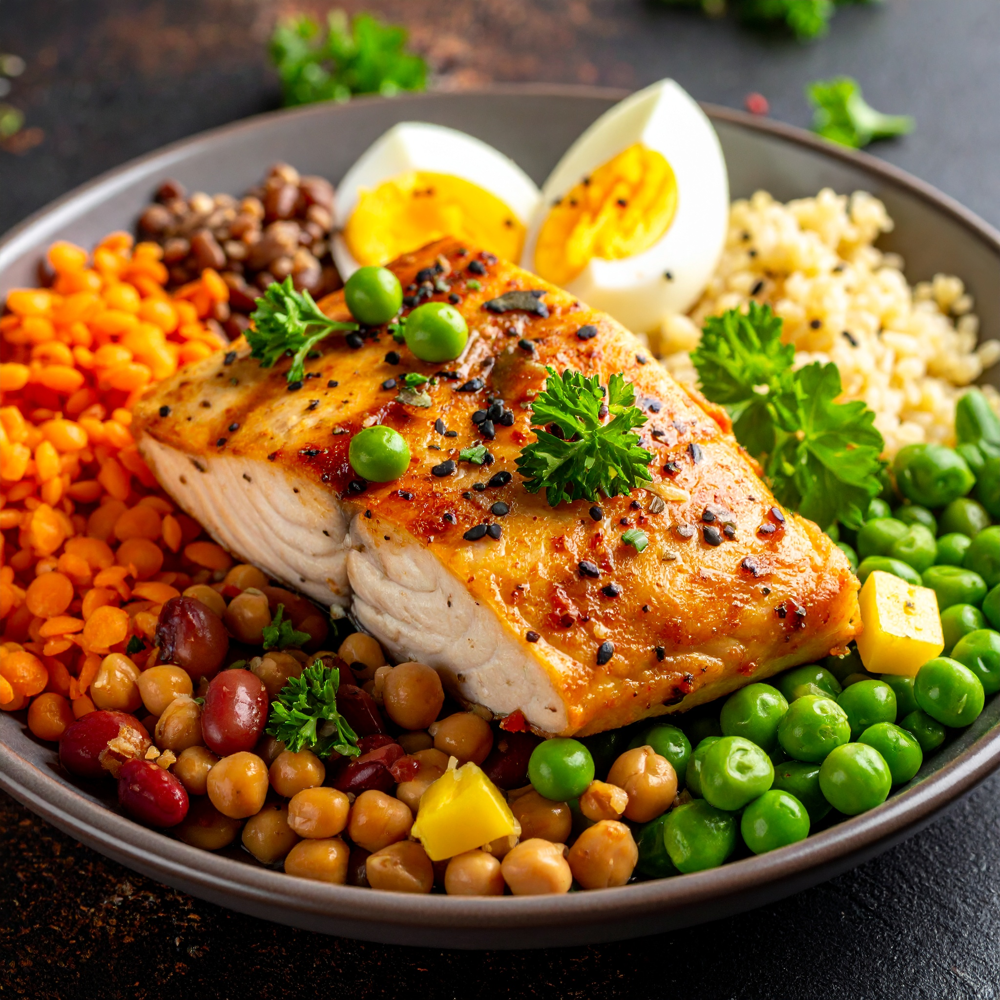

O que é uma alimentação equilibrada?
Uma alimentação equilibrada é aquela que fornece ao nosso corpo todos os nutrientes necessários para o seu bom funcionamento, em quantidades adequadas e de forma variada. Ela envolve o consumo de alimentos de todos os grupos, como frutas, legumes, verduras, cereais integrais, proteínas magras e gorduras saudáveis, evitando o excesso de açúcares, gorduras saturadas e sódio.
Qual a importancia da alimentação equilibrada?
Nutrientes para o corpo
A principal relevância de uma alimentação balanceada é, sem dúvida, fornecer ao corpo uma ampla variedade de nutrientes (como vitaminas, minerais, aminoácidos e outros). Ao nos alimentarmos de forma adequada, conseguimos suprir quase todas as necessidades do organismo apenas por meio dos alimentos.
Controle do peso
Manter uma alimentação saudável contribui para o controle do peso, mas o foco principal deve ser a saúde, e não a aparência. Muitas pessoas desejam alcançar o “corpo perfeito”, mas, na realidade, esse conceito não existe. O mais importante é cuidar do corpo dentro das suas possibilidades para se manter saudável. A saúde precisa ser sempre a prioridade!
Melhora da imunidade
Outro benefício de uma alimentação balanceada é o fortalecimento do sistema imunológico. Quando o corpo está bem nutrido e cheio de energia, as células de defesa ficam mais preparadas para combater vírus, bactérias e outros agentes que possam causar doenças. Em outras palavras, se você costuma ficar doente com frequência, adotar hábitos alimentares mais saudáveis pode ajudar significativamente a melhorar sua resistência e saúde geral.
Grupos de alimentos
Frutas e verduras

Fornecem vitaminas, minerais e fibras que ajudam na digestão, fortalecem o sistema imunológico e protegem contra doenças. Como a maçã, laranja, morango, melancia, alface, cenoura, brócolis.
Cereais e grãos integrais

São a principal fonte de energia do corpo, além de fornecer fibras que ajudam na digestão e no controle do colesterol. Dentro disso estão o arroz integral, aveia, quinoa, pão integral, milho, trigo integral.
Proteínas
Contribuem para o crescimento, manutenção e reparo dos músculos e tecidos do corpo. Também participam da produção de hormônios e enzimas. Como as carnes magras, frango, peixe, ovos, feijão, lentilha, grão-de-bico, tofu.
Gorduras saudáveis
: Fornecem energia, protegem órgãos, ajudam na absorção de vitaminas e mantêm a saúde do coração. Exemplo os azeite de oliva, castanhas, nozes, abacate, sementes de chia e linhaça.
Laticínios ou alternativas

Fornecem cálcio, vitamina D e proteínas, essenciais para ossos, dentes e músculos saudáveis. São eles leite, iogurte, queijo, bebida de soja fortificada, leite de amêndoas fortificado.
Como montar um prato equilibrado
Metade do prato
Vegetais e hortiças
Inclua folhas verdes, legumes e verduras de diferentes cores. Como alface, rúcula, cenoura, beterraba, brócolis, tomate.
Um quarto do prato
Carboidratos integrais
Fontes ricas em fibras para evitar picos de açúcar no sangue. Exemplo: arroz integral, batata-doce, mandioca, quinoa, macarrão integral.
Um quarto do prato
Proteínas magras
São eles, frango, peixe, ovos, feijão, lentilha, grão-de-bico, tofu.
Gorduras boas
Uma pequena porção
Inclua azeite de oliva, abacate, sementes ou oleaginosas.